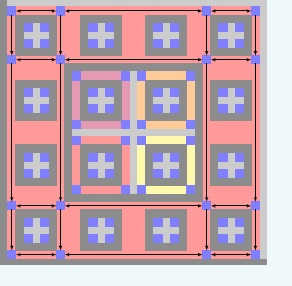
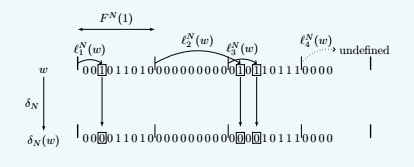

Silvère Gangloff

Silvère Gangloff
Until Aug. 2018 I was PhD student under supervision of
Mathieu Sablik.
I am currently post-doctoral researcher at ENS Lyon, LIP.
Mail: first.last@gmx.com
Research interests:
I am interested in symbolic dynamical systems called subshifts
of finite type (SFT). These systems are defined
by the action of the shift on a set of layouts on an infinite grid
of symbols, where the set of possible symbols is finite.
The set of these layouts is
defined by local rules (for instance, a symbol can not appear in the
neighborhood of another one).
As topological dynamical systems, they
are studied through concepts of topological dynamics.
Moreover, their properties are also
related computability theory, and their study often involves complex constructions that consist in the implementation
of Turing machines in hierarchical structures that emerge from the local rules. I am interested
in how dynamical constraints affect these properties and constructions.
This provides a formal counterpart
to the embodied cognition paradigm in neuroscience.
In a nutshell, the idea is that one can not avoid taking
into account the various constraints on a computing system
when it is embedded into reality. Constructions with subshifts
of finite type under dynamical constraints
involve numerous mechanisms that adapt computation embedding
to these constraints. Applying more constraints
would lead to more other phenomena, that it would be interesting
to understand in themselves, by asking specific questions.
Ph.D. thesis:
I defended my thesis at the end of June 2018.
Here is my
manuscript (in english) and my
presentation (in french).
What is in this text
which is not in my publications?
In give an interpretation of my mathematical problems and constructions
in biological terms in the Introduction and Comments parts. Second and third chapters provide an introduction
to subshifts in relation respectively
with dynamics and computability theory.
Publications:
Submitted:

With
Mathieu Sablik: Quantified block gluing, aperiodicity and entropy of multidimensional SFT.
Submitted to Journal d'Analyse Mathématique [
arXiv].
In this text, we expose a study of a computational threshold
effect relative to the computability of the entropy of bidimensional
subshifts, according to a quantified version of a mixing
property on subshifts of finite type (with
a gap function). The main result
is an adaptation of the celebrated construction
by Hochman and Meyerovitch embedding
Turing computations in multidimensional SFT in order to characterize
their possible entropies. This result states
that the entropies of SFT having a linear
version of the mixing property are the same as those of SFT without
constraint
. As a consequence, the
threshold is sub-linear.
This adaptation involves in particular
a modification of the computing machine implementation, allowing multiple
heads on the initial tapes and entering on the sides
of the computing units. The local rules
of the machine correspond to a function that
gives the result of collisions between entities
on the computation positions inside
the computing units. These entities
are transported in wires that connect the computation
positions. The control on the effect of this mechanism
is rejected to the border of the computing units, and
involves error signals that propagate on the border.

With
Benjamin Hellouin: Effect of quantified irreducibility
on subshifts entropy.
Accepted to Discrete and Continuous Dynamical Systems [
arXiv].
Since it is difficult to embed computations
in sub-linear mixing bidimensional SFT, we studied
this threshold with Benjamin for a class of
subshifts which is more flexible: decidable subshifts (whose language
is decidable).
We were able to characterize this threshold
with a summability condition on the gap function.
The proof involves one-dimensional
subshifts on alphabet {0,1} defined
by a sequence of restrictions on the possible number
of 1 symbols in length n words for all n. Above the
threshold, we code subshifts to have non-computable entropy.
This uses approximation of the change in entropy induced
by a perturbation in the sequence of restrictions.

With
Mathieu Sablik: A characterization
of the possible entropy dimensions of minimal Z^3-SFT. [
arXiv].
In this text, we studied another constraint on
multidimensional SFT and the effect of this restriction
on embedding computations in these subshifts. We
prove that this embedding is still possible
under this constraint. We adapt a construction by Meyerovitch
in order to characterize the possible entropy dimensions
of tridimensional SFT.
This adaptation involves many information processing mechanisms
that are not observed in other constructions in the literature.
The main tool is the use of counters that alternates all
the "random behaviors" that happen in the configurations
of the subshifts. The value of these counters
code entirely the behavior of the machines in the computing
units. They also have a non-coding part and a suspension
mechanism which allow the counter to have a Fermat number
as period. Goldbach's theorem ensures that these numbers
are all coprime. We use this fact to have
the minimality property.
The division of the counters into a coding part and non-coding
part confirmed a possible analogy between mechanisms
observed in these constructions and in the living
triggered in our first work with Mathieu.

With
Mathieu Sablik: Simulation of minimal effective dynamical systems on the Cantor
set by minimal tridimensional SFT. [arXiv].
In this text, we explore further the effect of minimality on "dense" computation. This means that, unlike
the recent constructions of minimal multidimensional subshifts of finite type by B. Durand and A. Romashchenko,
which use a sparse way to implement machines into the subshifts in order to ensure the minimality, we keep
the implementation dense.
We use the tools developed for the characterization of entropy dimensions of minimal tridimensional
SFT, in order to provide a simulation theorem of dynamical systems on the
Cantor sets which is robust to minimality constraint.
The idea is to encode sequences of the Cantor set in hierarchical structures and make machines control evolution
of sequences in a fixed direction. One specific aspect of the construction is that it makes appear
a one dimensional full shift degenerated behavior. We thus developped a way to simulate this, using back Fermat number
period counters. Moreover, the implementation is done in two dimensional sections, and it needs functional specialisation
of the computing units in order to not break the minimality.
Short term projects:
1. A comparison of computation embedding constructions of subshifts of finite type and the model of hierarchical predictive coding
[ref:Canonical microcircuits for predictive coding] in terms
of information processing structures.
2. Characterize computational thresholds relative to dynamical restrictions on subshifts of finite type.
3. Import the tools developped for adapting computation embedding constructions to dynamical restrictions into local entropy theory.
4. Develop general methods to compute the entropy of simple subshifts of finite type.
Other problems:
Here are examples of other
problems I am interested in for which I don't
have developments (at least yet):
- provide a classification
of local rules types in SFT (signals, structures, random
bits, etc.): these words are used, but there is no
formal object behind them which are defined in the literature.
There is a first attempt to do this in my Ph.D.
thesis (second chapter).
- mesuring the organization property of dynamical systems:
the entropy is not adapted since it has high
values for highly chaotic systems and low values for very
structures ones. Is there some natural invariant
which has high values for "organized" systems and low
ones for highly chaotic or structured ones?
Curriculum Vitae:
2015-2018. Ph.D. in Mathematics and Theoretical computer
science: Algorithmic complexity
of growth-type invariants of multidimensional SFT under
dynamical constraints.
2011-2015. ENS Paris: Studies in mathematics,
biology, and history ; Master of mathematics;
Agrégation de mathématiques.
More details:
Curiculum vitae.
Long term projects:
I spend a lot of time to read on various subjects: biology,
philosophy, psychology, etc.
I also like to write and I attempt to write
a coherent philosophical essay based on my notes.
In a nutshell, I am interested in the comparative understanding
of different approaches to knowledge: mathematics,
alchemy, religion..